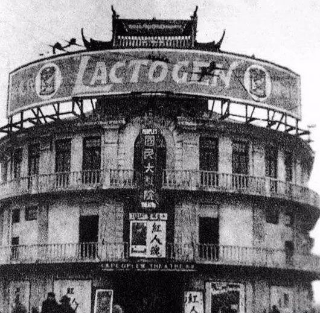
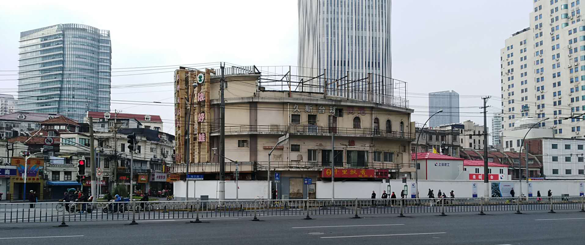

胜利大影院位于北海宁路与乍浦路的交接处，现虹口区286弄1号，是上海著名的娱乐场所。胜利大影院的前身“好莱坞大戏院”诞生于1929年，由我国著名魔术师张慧冲之父张志标创建，初期主要用于进行魔术表演。因为运营不济，几经转手，1930年5月，被美国人托马斯的孔雀电影公司收购，更名国民大戏院；1932年租给德国商人，更名威利大戏院；孤岛时期由日商经办，改名昭南剧场；1942年，售与日人律吉悦夫；抗日战争胜利后，改名为胜利艺术电影院，恢复国民大戏院之名，由上海社会局接收。

（建立初期照片）
1929年日本友人内山完造先生将原开设在四川北路横浜桥的内山书店总店迁到千爱里（今四川北路2050号）；鲁迅先生也经常在此进出。还曾借千爱里40号（今38号）举办过木刻展览会。抗战胜利后，千爱里住宅由中央信托局地产管理处接管，并作为民房对外租赁。解放后由上海市人民政府接管。

（胜利电影院现状）
解放初期，胜利大影院于1949年6月7日，由上海市军管会文艺处接管，11月改由中国影片公司华东公司管辖，12月由民光剧院改名为胜利大影院。目前原建筑依然在，是一家叫“胜利娱乐城”的网咖，现已倒闭，预备拆除。

（胜利电影院现状）